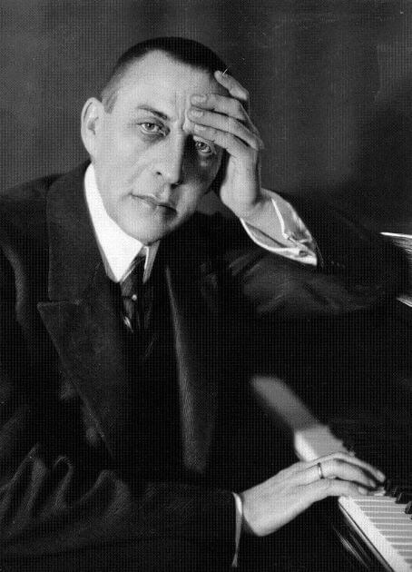

 Compositor, pianista y director de orquesta ruso. Fue uno de los más delicados pianistas de su tiempo y, como compositor, el último gran representante del Romanticismo tardío ruso. Hijo de un capitán de la Guardia Imperial y descendiente de una familia noble, a los 9 años inició sus estudios de piano en el Conservatorio de San Petersburgo. Tres años después fue aceptado en el Conservatorio de Moscú por Zverev. Junto con otros dos aventajados alumnos, estuvo durante cuatro años en casa de Zverev, donde la rigurosa disciplina y la práctica supervisada dieron como resultado un destacado progreso técnico. El deseo de Rachmaninov de seguir estudios de composición, al mismo tiempo que de piano, le condujeron al alejamiento de su profesor. Tras dejar a éste, a partir de 1888 fue discípulo de Siloti (piano), Taneiev (contrapunto y fuga), y Arensky (composición) en el Conservatorio moscovita, finalizando sus estudios en 1892. Siendo todavía estudiante escribió las piezas para piano opus 3, a las que pertenece el célebre Preludio en do sostenido menor, y su ópera en un acto Aleko, que le valió la medalla de oro y que fue representada con gran éxito en el Teatro Bolshoi en 1893. En estas primeras composiciones se acusa la influencia de Taneiev y Arensky.
A partir de 1893 fue profesor de piano en la Escuela María de Moscú, actividad que abandonó para dedicarse a su carrera de virtuoso del piano. En este período compuso su Primera Sinfonía (1895); el desastroso estreno de esta obra bajo la dirección de Glazunov, en 1897, provocó críticas de Cui y de la prensa de San Petersburgo y marcó al músico durante varios años. Como resultado no volvió a componer hasta 1900. Sin embargo, durante esos años reapareció como director de ópera al hacerse amigo de Chaliapin, con el que posteriormente trabajó en giras de recitales. Juntos visitaron Italia y allí Rachmaninov empezó a componer la que sería una de sus obras maestras más populares: el segundo Concierto para piano, por la que un jurado compuesto por Rimski-Korsakov, Liadov y Glazunov, le concedió un premio en 1904. Se casó con su prima Natalia Satin y fue director de orquesta de la Ópera privada de S. I. Mamomotov en Moscú (1897-1898) y del Teatro Bolshoi (1904-1906). Anteriormente, en 1898 fue invitado por la Sociedad Filarmónica de Londres para dirigir su orquesta.
Salida de Rusia.
Hacia 1906, los acontecimientos políticos y sociales de Rusia empujaron al músico a buscar asilio en Alemania, donde se dedicó a la composición, en particular a la ópera Monna Vanna (inconclusa) y a la Segunda Sinfonía (1907), que posteriormente ganó el primer premio en el Concurso Glinka. Más tarde vivió algún tiempo en Rusia y Alemania, a la vez que realizó giras de conciertos, como director y pianista, por Europa Occidental, Inglaterra y Estados Unidos de América. Dejó definitivamente su país en 1917 tras la Revolución de Octubre, para vivir durante algún tiempo en Escandinavia. Posteriormente, residió en París, Suiza y, finalmente, en los Estados Unidos de América, donde se estableció en 1935 dedicándose sobre todo a su carrera de intérprete hasta que murió en Berverly Hill (California), el 28 de marzo de 1943. Su música fue prohibida entre 1931 y 1935 por las autoridades soviéticas como resultado de las críticas al régimen soviético que hizo Rachmaninov.
Entre sus obras se cuentan, además de las ya citadas, la ópera Francesca da Rimini (1904); las cantatas La Primavera (1902), Litugia de San Juan Crisóstomo (1910) y una Misa de vísperas (1915); Tres cantos populares rusos (1926) para coro y orquesta; cuatro Conciertos para piano (1891-1942), y la Rapsodia sobre un tema de Paganini (1934) para piano y orquesta. Sus obras para piano con el concurso de orquesta sinfónica representan el final en el ciclo del concierto romántico cuya línea habían mantenido Schmann, Grieg, Listz y Tchaikowski. Influido por este último, Rachmaninov introdujo la elocuencia romántica en un planteamiento melódico de brillante colorido nacionalista.
Rachmaninov fue un fértil compositor del que se conocen poco sus obras menores, al margen del ya citado Preludio en do sostenido menor. Entre otras muchas creaciones, merecen citarse Trío elegíaco (1892) para violín, violoncelo y piano; Quinteto para piano y otro Trío para piano; varias piezas para violín y piano, para violoncelo y piano, para piano solo, dos Sonatas (1907 y 1913), Variaciones sobre temas de Chopin (1902-1903) y Corelli (1932), y cuatro obras para piano a cuatro manos. Además, compuso setenta y siete lieder. En el género sinfónico, además de sus dos Fantasías, creó entre otras obras el poema sinfónico basado en la escena de Boecklin La isla de los Muertos (1909).
{kind=link}